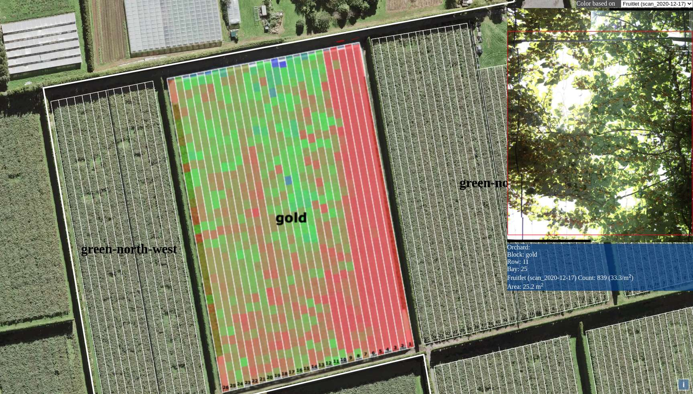
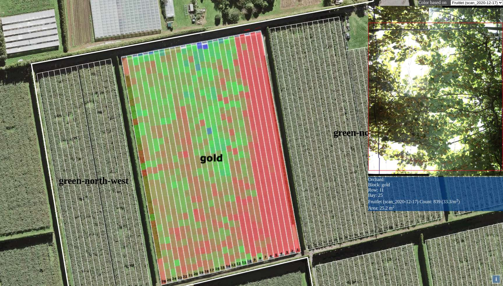
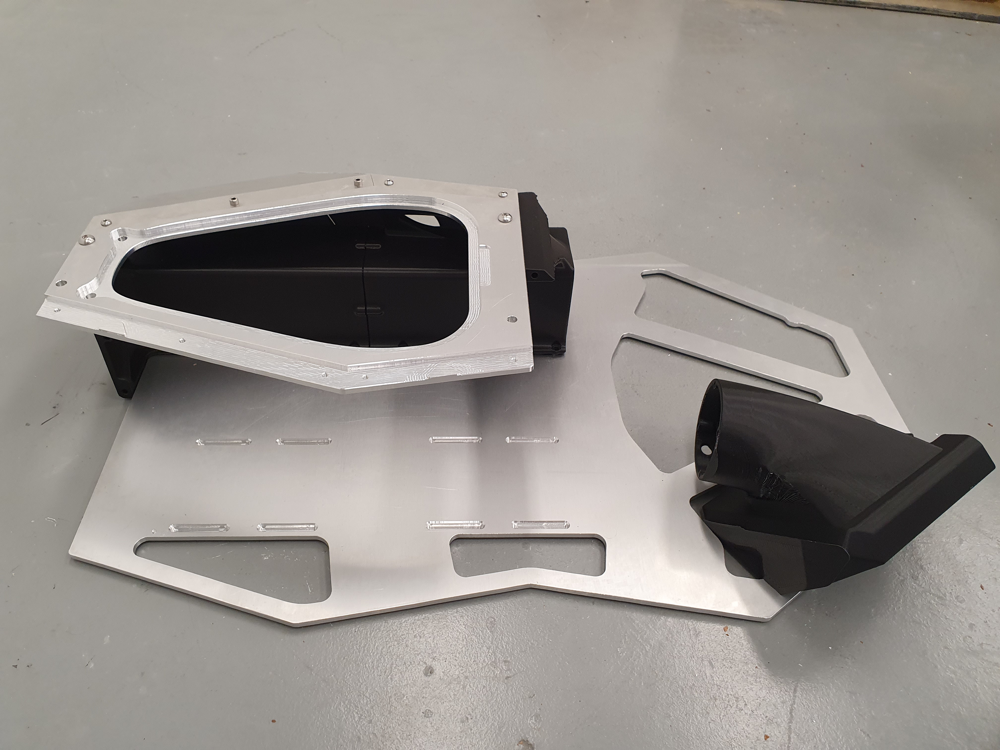
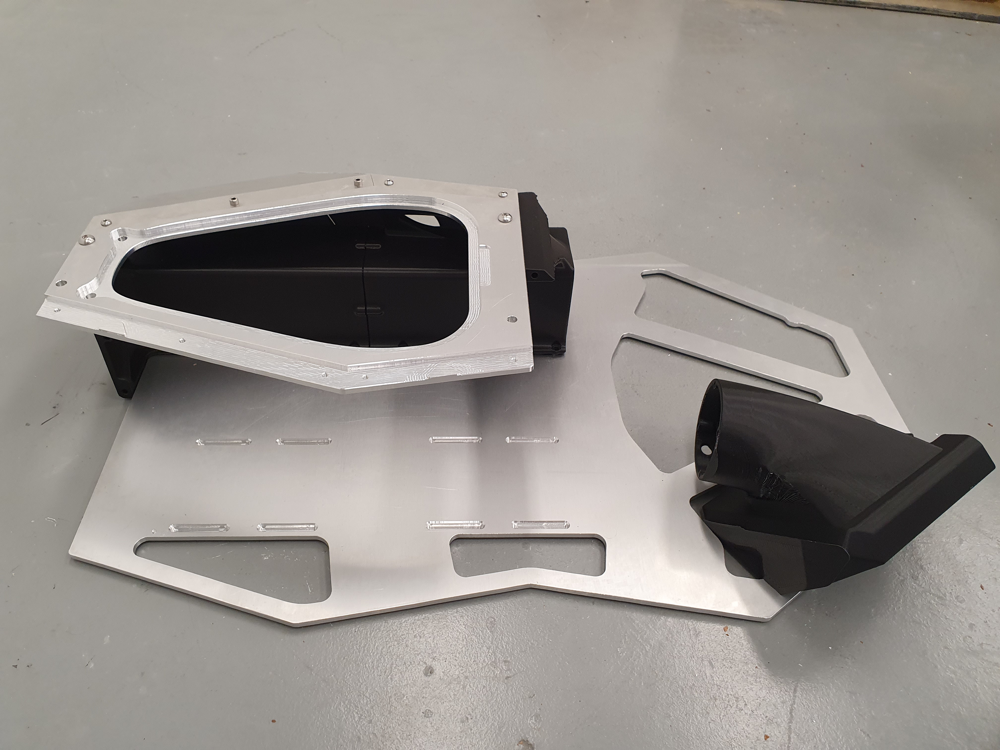

We’re excited to be able to say, in this update, that our full workflow is up and running! We have our
robot consistently, autonomously navigating rows, feeding data into the AI, and outputting high quality,
object-detected, canopy maps.
Short of breaking out the champagne, we’re now at the stage where we’re setting up at a variety of
orchards, under a variety of conditions, and stress testing our robot and our detection AI.
 

We are also hard at work creating the latest version of our robot. Version Five is intended to be a final rollout version (although we are sure that by the time we come to produce additional units we will probably have changes to make, again). Not only is Version Five meant as an update to our current bot, it’s also designed to be produced - as much as possible, by CNC and 3D printing machines so that multiple units can be created as efficiently as possible.
 

We’d also like to use this update to say that we’re aware that another kiwifruit scanning company was published by a news outlet recently, and take the opportunity to make clear the differences, and advantages, of the Acuris model.
In comparison to other competing technologies that use extrapolated probability to predict actual numbers,
Acuris uses frames from a lossless video feed to get actual counts. This video source also allows us to
intelligently avoid occluded shots, or photos affected by direct sun. Acuris records the position of each
detection, cross referencing these against positions in other frames.This methodology renders our final
count to be far more accurate than otherwise possible.
In terms of manageability and safety, our unique robotics platform allows a small number of users to pilot
multiple units simultaneously, completing hectares of scans faster than any prospective competitor.
Acuris’ robots are also safer than running manned equipment through an orchard, and their light-weight
allows them to be run every day without damaging the ground.
With our continued testing, Acuris is now closing in on a confident commercial rollout. Of course, none of this would be possible without the continued support of our investors. We’d like to close out this update by thanking everyone who has supported us. We look forward to sharing even more exciting updates with you in the coming months!